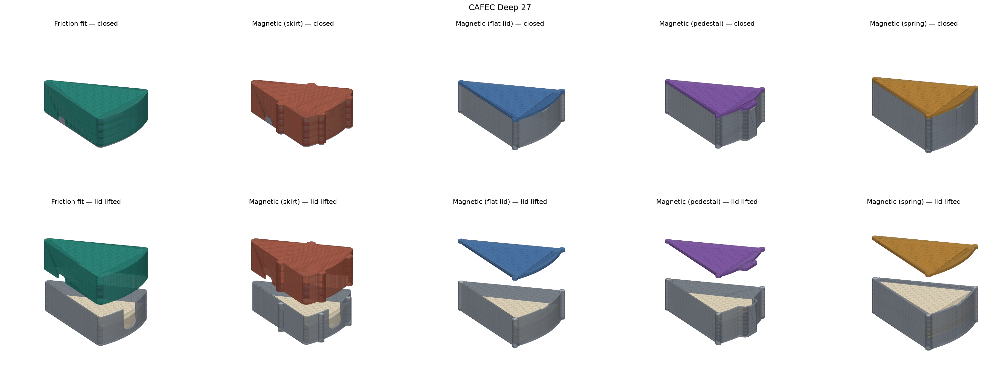

CAFEC Deep 27
155 mm side · 42° wedge · no tab · 47 mm deep · 5 designs
STL downloads
- deep27-case-friction-base.stl
- deep27-case-friction-lid.stl
- deep27-case-friction-lid-engraved.stl
- deep27-case-magnet-skirt-base.stl
- deep27-case-magnet-skirt-lid.stl
- deep27-case-magnet-skirt-lid-engraved.stl
- deep27-case-magnet-flat-base.stl
- deep27-case-magnet-flat-lid.stl
- deep27-case-magnet-flat-lid-engraved.stl
- deep27-case-magnet-pedestal-base.stl
- deep27-case-magnet-pedestal-lid.stl
- deep27-case-magnet-pedestal-lid-engraved.stl
- deep27-case-magnet-spring-base.stl
- deep27-case-magnet-spring-lid.stl
- deep27-case-magnet-spring-lid-engraved.stl
- deep27-case-magnet-spring-follower.stl